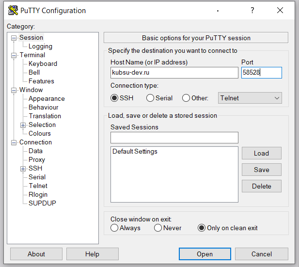
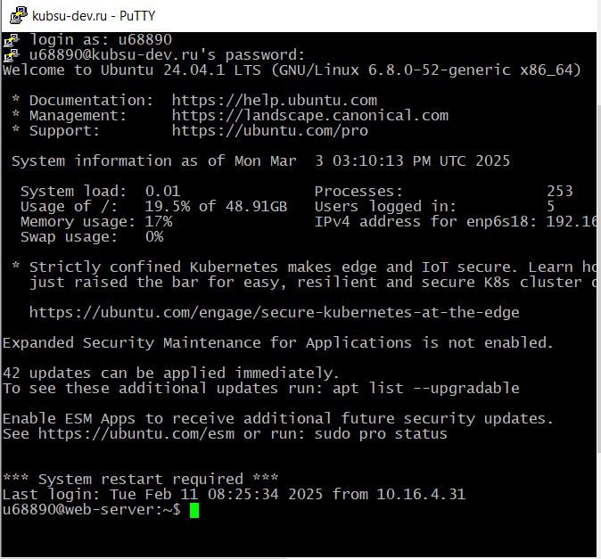
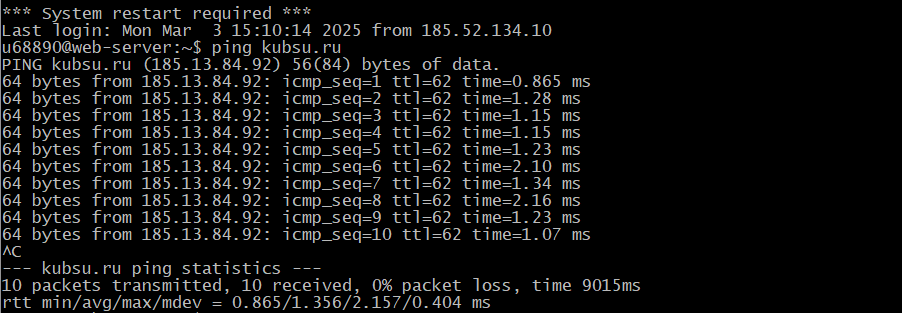
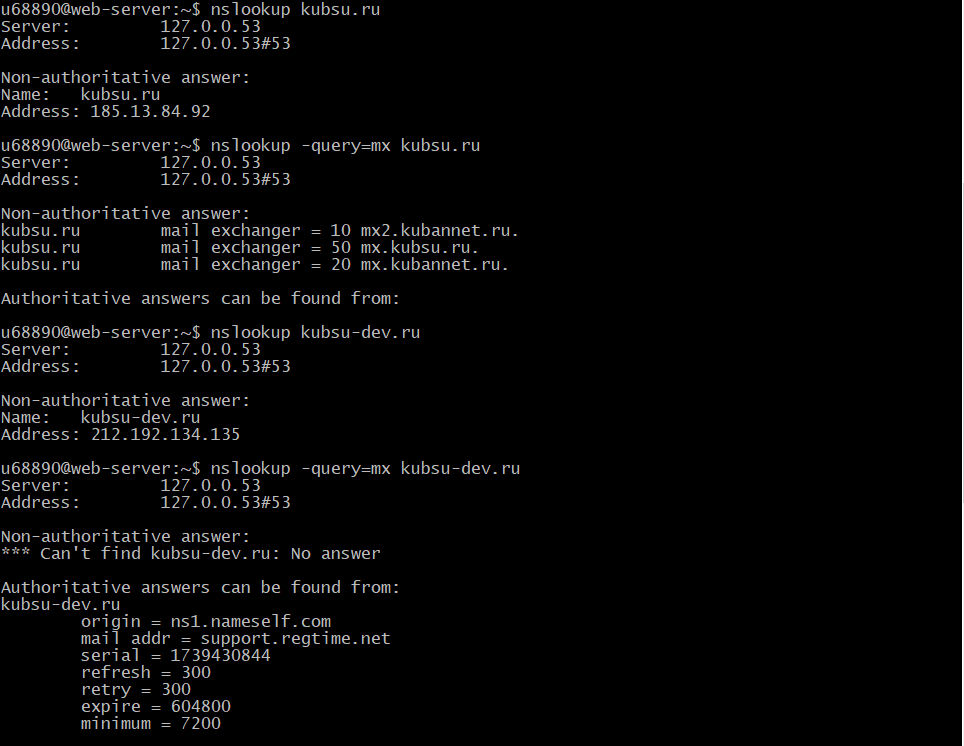
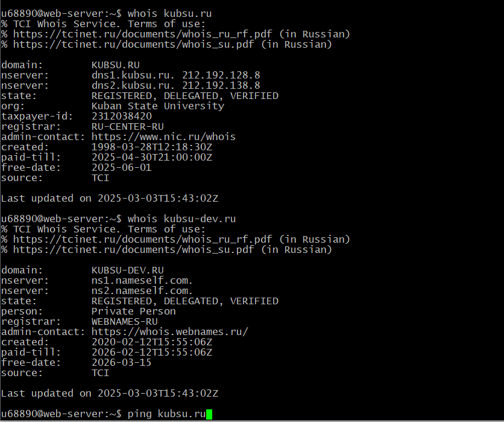
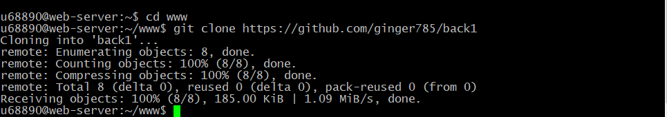
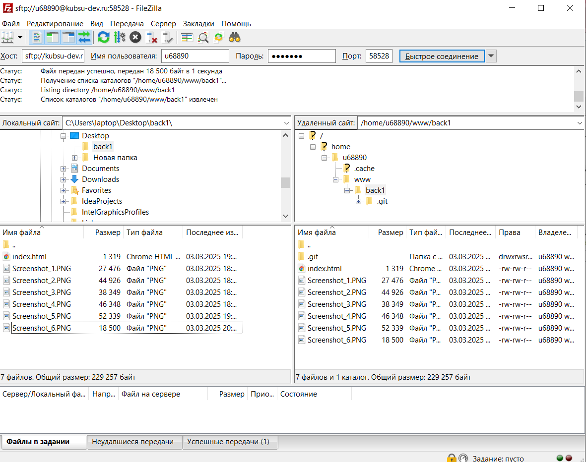

Подключение к серверу kubsu-dev.ru по SSH с помощью клиента Putty.
Подключились
С помощью команды ping на учебном сервере узнать IP-адрес веб-сервера kubsu.ru.
С помощью команды nslookup узнать A-записи и MX-записи домена kubsu.ru и kubsu-dev.ru
С помощью команды whois узнать дату регистрации домена kubsu.ru и kubsu- dev.ru
С помощью SSH склонировать репозитарий со скриншотами и страницей в каталог www. Веб-страница должна открываться по адресу http://ваш_логин.kubsu-dev.ru/каталог_задания_1/
С помощью программы FileZilla соединиться с учебным сервером с вашим логином и паролем по протоколу SFTP и скопировать на локальный компьютер файлы задания из каталога www.
